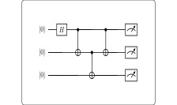

<!DOCTYPE html>
<html xmlns="http://www.w3.org/1999/xhtml">
<head>
  <meta charset="utf-8" />
  <meta name="generator" content="pandoc 3.10.2" />
  <meta name="viewport" content="width=device-width, initial-scale=1.0, user-scalable=yes" />
  <meta name="author" content="QuoNic" />
  <title>surface_code</title>
  <style>
    /* Default styles provided by pandoc.
    ** See https://pandoc.org/MANUAL.html#variables-for-html for config info.
    */
    html {
      color: #1a1a1a;
      background-color: #fdfdfd;
    }
    body {
      margin: 0 auto;
      max-width: 36em;
      padding-left: 50px;
      padding-right: 50px;
      padding-top: 50px;
      padding-bottom: 50px;
      hyphens: auto;
      overflow-wrap: break-word;
      text-rendering: optimizeLegibility;
      font-kerning: normal;
    }
    @media (max-width: 600px) {
      body {
        font-size: 0.9em;
        padding: 12px;
      }
      h1 {
        font-size: 1.8em;
      }
    }
    @media print {
      html {
        background-color: white;
      }
      body {
        background-color: transparent;
        color: black;
      }
      p, h2, h3 {
        orphans: 3;
        widows: 3;
      }
      h2, h3, h4 {
        page-break-after: avoid;
      }
    }
    p {
      margin: 1em 0;
    }
    a {
      color: #1a1a1a;
    }
    a:visited {
      color: #1a1a1a;
    }
    img {
      max-width: 100%;
    }
    svg {
      height: auto;
      max-width: 100%;
    }
    h1, h2, h3, h4, h5, h6 {
      margin-top: 1.4em;
    }
    h5, h6 {
      font-size: 1em;
      font-style: italic;
    }
    h6 {
      font-weight: normal;
    }
    ol, ul {
      padding-left: 1.7em;
      margin-top: 1em;
    }
    li > ol, li > ul {
      margin-top: 0;
    }
    blockquote {
      margin: 1em 0 1em 1.7em;
      padding-left: 1em;
      border-left: 2px solid #e6e6e6;
      color: #606060;
    }
    code {
      white-space: pre-wrap;
      font-family: Menlo, Monaco, Consolas, 'Lucida Console', monospace;
      font-size: 85%;
      margin: 0;
      hyphens: manual;
    }
    pre {
      margin: 1em 0;
      overflow: auto;
    }
    pre code {
      padding: 0;
      overflow: visible;
      overflow-wrap: normal;
    }
    .sourceCode {
     background-color: transparent;
     overflow: visible;
    }
    hr {
      border: none;
      border-top: 1px solid #1a1a1a;
      height: 1px;
      margin: 1em 0;
    }
    table {
      margin: 1em 0;
      border-collapse: collapse;
      width: 100%;
      overflow-x: auto;
      display: block;
      font-variant-numeric: lining-nums tabular-nums;
    }
    table caption {
      margin-bottom: 0.75em;
    }
    tbody {
      margin-top: 0.5em;
      border-top: 1px solid #1a1a1a;
      border-bottom: 1px solid #1a1a1a;
    }
    th {
      border-top: 1px solid #1a1a1a;
      padding: 0.25em 0.5em 0.25em 0.5em;
    }
    td {
      padding: 0.125em 0.5em 0.25em 0.5em;
    }
    header {
      margin-bottom: 4em;
      text-align: center;
    }
    #TOC li {
      list-style: none;
    }
    #TOC ul {
      padding-left: 1.3em;
    }
    #TOC > ul {
      padding-left: 0;
    }
    #TOC a:not(:hover) {
      text-decoration: none;
    }
    span.smallcaps{font-variant: small-caps;}
    div.columns{display: flex; gap: 1.5em;}
    div.column{flex: auto;}
    @media screen {
    div.columns{gap: min(4vw, 1.5em);}
    div.column{overflow-x: auto;}
    }
    div.hanging-indent{margin-left: 1.5em; text-indent: -1.5em;}
    /* The extra [class] is a hack that increases specificity enough to
       override a similar rule in reveal.js */
    ul.task-list[class]{list-style: none;}
    ul.task-list li input[type="checkbox"] {
      font-size: inherit;
      width: 0.8em;
      margin: 0 0.8em 0.2em -1.6em;
      vertical-align: middle;
    }
  </style>
  <script defer="" src="" type="text/javascript"></script>
</head>
<body>
<header id="title-block-header">
<h1 class="title">surface_code</h1>
<p class="author">QuoNic</p>
</header>
<div class="center">
<p><strong>Error Correction / 纠错</strong> | 难度：高级 | 预计时间：20
分钟</p>
</div>
<h1 id="为什么需要">为什么需要？</h1>
<p>表面码是目前最有前景的量子纠错码，具有最高的容错阈值。</p>
<h2 id="经典局限">经典局限</h2>
<p>̱</p>
<ul>
<li><p>Shor 码和 Steane 码的容错阈值较低</p></li>
<li><p>对硬件连接性要求高</p></li>
</ul>
<h2 id="量子优势">量子优势</h2>
<p>̱</p>
<ul>
<li><p>表面码有最高的容错阈值（约 1%）</p></li>
<li><p>只需要最近邻连接</p></li>
<li><p>适合二维量子处理器</p></li>
</ul>
<h2 id="实际应用">实际应用</h2>
<p>̱</p>
<ul>
<li><p>量子计算（容错量子计算）</p></li>
<li><p>量子通信（保护量子态）</p></li>
<li><p>量子存储（延长相干时间）</p></li>
</ul>
<h1 id="快速上手">快速上手</h1>
<pre style="python"><code>from quonic.qec import surface_code

# Encode, introduce error, correct
result = surface_code(distance=3, error_rate=0.01)
print(f&quot;Logical error rate: {result.logical_error_rate}&quot;)</code></pre>
<p><strong>预期输出</strong>：</p>
<pre><code>Logical error rate: 0.001</code></pre>
<h1 id="原理详解">原理详解</h1>
<h2 id="电路图">电路图</h2>
<div class="center">
<p></p>
</div>
<h2 id="数学推导">数学推导</h2>
<p>表面码使用二维网格上的量子比特： ̱</p>
<ul>
<li><p>数据量子比特：存储量子信息</p></li>
<li><p>辅助量子比特：测量校验子</p></li>
</ul>
<p><strong>校验子测量</strong>： <span
class="math display">\[\begin{equation}
S_X = \prod_{i \in \text{star}} X_i, \quad S_Z = \prod_{i \in
\text{plaquette}} Z_i
\end{equation}\]</span></p>
<p><strong>容错阈值</strong>： <span
class="math display">\[\begin{equation}
p_{\text{threshold}} \approx 1\%
\end{equation}\]</span></p>
<h2 id="几何解释">几何解释</h2>
<p>表面码将量子比特排列在二维网格上，通过测量局部校验子来检测和纠正错误。</p>
<h1 id="代码详解">代码详解</h1>
<pre style="python"><code>from quonic.qec import surface_code

# surface_code(distance, error_rate)
# distance: code distance (odd integer)
# error_rate: physical error rate
result = surface_code(distance=3, error_rate=0.01)

# result.logical_error_rate: logical error rate
# result.syndrome: measured syndrome
print(f&quot;Logical error rate: {result.logical_error_rate}&quot;)</code></pre>
<h1 id="进阶用法">进阶用法</h1>
<h2 id="场景-1不同距离">场景 1：不同距离</h2>
<pre style="python"><code># Larger distance for better protection
for d in [3, 5, 7]:
    result = surface_code(distance=d, error_rate=0.01)
    print(f&quot;d={d}: logical error rate={result.logical_error_rate}&quot;)</code></pre>
<h2 id="场景-2不同错误率">场景 2：不同错误率</h2>
<pre style="python"><code># Different physical error rates
for p in [0.001, 0.01, 0.1]:
    result = surface_code(distance=3, error_rate=p)
    print(f&quot;p={p}: logical error rate={result.logical_error_rate}&quot;)</code></pre>
<h1 id="适用场景">适用场景</h1>
<h2 id="量子计算">量子计算</h2>
<p>表面码是容错量子计算的基础。</p>
<h2 id="量子通信">量子通信</h2>
<p>表面码可以保护量子通信中的量子态。</p>
<h1 id="常见问题">常见问题</h1>
<h2 id="表面码的容错阈值是多少">表面码的容错阈值是多少？</h2>
<p>约 1%，是目前最高的。</p>
<h2 id="表面码需要多少量子比特">表面码需要多少量子比特？</h2>
<p>需要 <span class="math inline">\(O(d^2)\)</span> 个量子比特，其中
<span class="math inline">\(d\)</span> 是码距。</p>
<h1 id="学习路径">学习路径</h1>
<h2 id="前置知识">前置知识</h2>
<p>̱</p>
<ul>
<li><p>Shor 码</p></li>
<li><p>Steane 码</p></li>
<li><p>量子测量</p></li>
</ul>
<h2 id="继续学习">继续学习</h2>
<p>̱</p>
<ul>
<li><p>颜色码</p></li>
<li><p>拓扑纠错</p></li>
<li><p>容错量子计算</p></li>
</ul>
<h1 id="完整示例代码">完整示例代码</h1>
<h2 id="示例-1基本表面码">示例 1：基本表面码</h2>
<pre style="python"><code>from quonic.qec import surface_code

result = surface_code(distance=3, error_rate=0.01)
print(f&quot;Logical error rate: {result.logical_error_rate}&quot;)</code></pre>
<h1 id="下载">下载</h1>
<p></p>
<ul>
<li><p>(https://github.com/ChrisLee0721/QuoNic/blob/main/examples/surface_code/surface_code.py)</p></li>
</ul>
</body>
</html>
